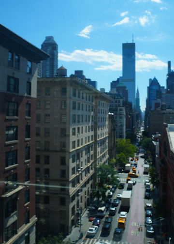

I chose this image because I felt that the colors in the image really complimented each other: the deep red of the brick, bright yellow taxi cabs, blue sky, and rich green trees. I also thought that the view of Lexington Avenue stretching so far was compelling and appealing. Going into editing the photo, I knew I wanted to emphasize the colors of the image and make them pop. As I played around with Photoshop, I added a vibrance layer and brought the vibrance and saturation higher. I noticed that this deepened the colors and did just what I wanted. I also put a curves layer, and this fascinated me by the way I was able to darken certain parts of the image. This additional layer drew even more attention to the light of the image and the vibrant colors. Lastly, I added a color balance layer and increased the cyan tone because I felt that the image already had a blue tone to it, so I wanted to enhance it.
